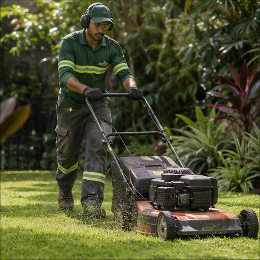
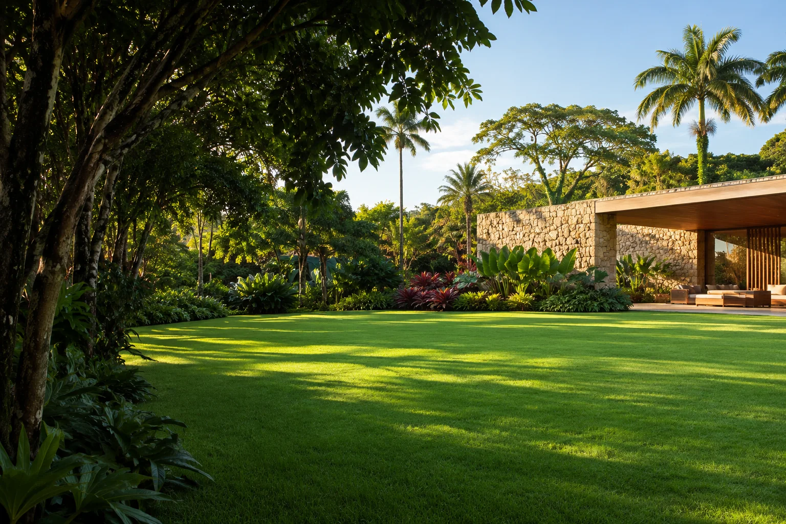
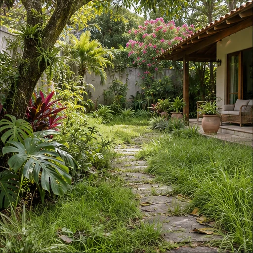
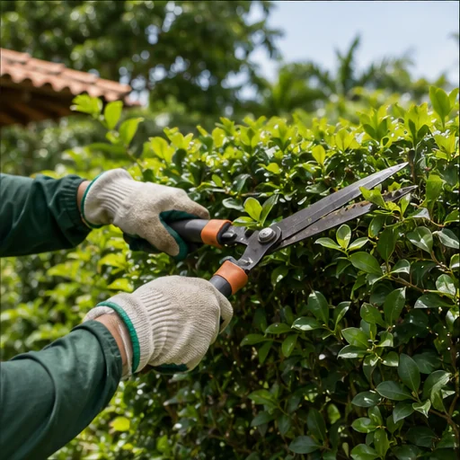
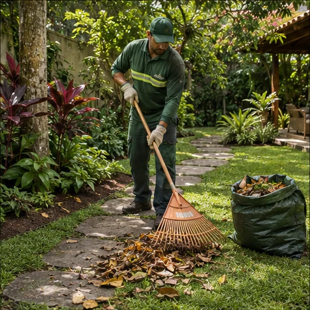
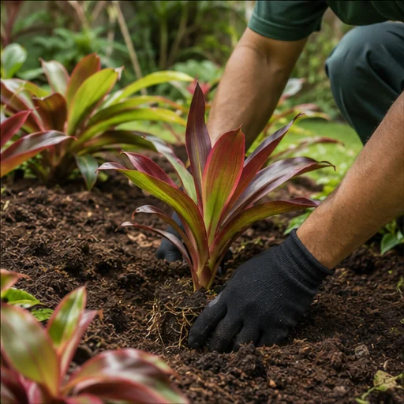
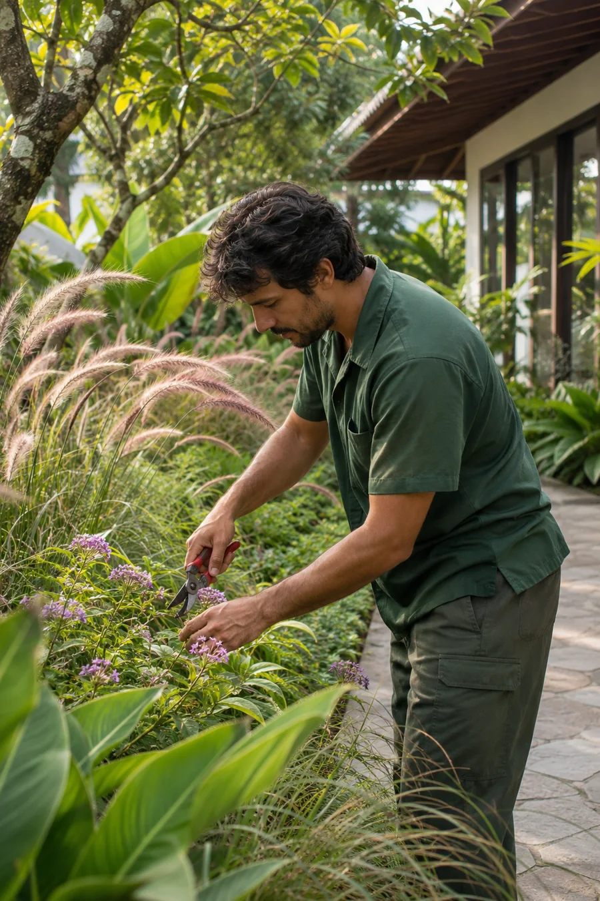
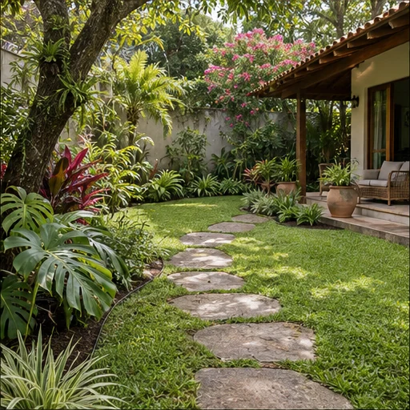

Corte e manutenção de gramados
Mantenha seu gramado aparado, uniforme e com uma aparência renovada.
Solicitar orçamento
Cuidado profissional com seu espaço verde
Tenha um jardim bonito, saudável e bem cuidado sem precisar se preocupar com a manutenção. Conte com a RM Jardinagem para transformar e preservar suas áreas verdes.
Quero fazer um orçamento agora!Atendimento personalizado Orçamento pelo WhatsApp

A falta de tempo, o crescimento descontrolado da vegetação e a dificuldade de manter as plantas saudáveis podem transformar um espaço que deveria proporcionar tranquilidade em uma preocupação constante.
Além de comprometer a beleza do ambiente, a falta de manutenção pode prejudicar a saúde das plantas e a aparência do imóvel.
Apresente os principais problemas enfrentados pelos clientes:
- Gramado alto e sem manutenção. - Plantas crescendo de maneira desordenada. - Falta de tempo para cuidar do jardim. - Vegetação ressecada ou sem os cuidados necessários. - Áreas externas com aparência de abandono.
Finalize com a seguinte frase em destaque:
Você aproveita seu espaço. Nós cuidamos dele.
Quero transformar meu jardimNossos serviços
Soluções em jardinagem para manter suas áreas verdes bonitas, organizadas e saudáveis.

Mantenha seu gramado aparado, uniforme e com uma aparência renovada.
Solicitar orçamento
Cuidados que contribuem para o desenvolvimento saudável das plantas e a harmonia do ambiente.
Solicitar orçamento
Remoção de folhas, vegetação indesejada e resíduos, proporcionando um espaço mais limpo e organizado.
Solicitar orçamento
Renove suas áreas verdes com plantas e soluções adequadas às características do ambiente.
Solicitar orçamento
Cuidados programados para que seu jardim permaneça bonito durante todo o ano.
Solicitar orçamento
Soluções personalizadas para residências, empresas, condomínios e estabelecimentos comerciais.
Solicitar orçamentoImagens ilustrativas. Consulte a disponibilidade dos serviços pelo WhatsApp.
Aproveite seus momentos de descanso sem precisar se preocupar com o trabalho de manutenção do jardim.
Um ambiente externo bem cuidado contribui para uma excelente impressão visual.
Cuidados adequados ajudam a preservar a beleza e o desenvolvimento da vegetação.
Soluções pensadas de acordo com as características e necessidades de cada espaço.
Desfrute de uma área verde organizada, bonita e convidativa.
Transformações
Veja como uma manutenção profissional pode transformar completamente a aparência de uma área verde.

Envie uma mensagem pelo WhatsApp e conte o que você precisa.
Entendemos as características do seu jardim e quais serviços são necessários. Fotografias podem ajudar nessa avaliação inicial.
Receba uma proposta personalizada de acordo com as necessidades do ambiente.
Após a aprovação do orçamento e o agendamento, nossa equipe realiza os serviços combinados.
Conheça a RM Jardinagem
A RM Jardinagem tem como proposta transformar áreas verdes em ambientes mais bonitos, organizados e agradáveis.
Entendemos que um jardim bem cuidado vai muito além da estética. Ele contribui para a sensação de bem-estar, conforto e valorização do espaço.
Por isso, buscamos oferecer um atendimento personalizado, respeitando as características de cada ambiente e as necessidades de cada cliente.
Nosso compromisso é realizar cada serviço com atenção aos detalhes, responsabilidade e cuidado com a natureza.
Destaque visualmente os seguintes valores:
- Capricho. - Responsabilidade. - Atenção aos detalhes. - Respeito à natureza. - Atendimento personalizado.
Quem confia em nosso trabalho
Com os cuidados certos, sua área verde pode se tornar um ambiente muito mais agradável, bonito e convidativo.
Não espere que a falta de manutenção torne o trabalho ainda maior. Converse com nossa equipe e descubra a melhor solução para seu espaço.
Destaque:
- Orçamento personalizado. - Atendimento diretamente pelo WhatsApp. - Serviços de acordo com as necessidades do ambiente. - Agendamento conforme disponibilidade.
Perguntas frequentes
O valor depende do tamanho da área, das condições do jardim e dos serviços necessários. Entre em contato pelo WhatsApp para solicitar um orçamento personalizado.
Entre em contato com nossa equipe para consultar as opções de serviços pontuais e manutenção periódica.
Basta clicar em um dos botões de WhatsApp disponíveis nesta página e informar o tipo de serviço que você precisa. Você também poderá encaminhar fotografias do ambiente.
Informe as características do serviço desejado durante o atendimento. Nossa equipe esclarecerá quais equipamentos e materiais serão necessários.
Consulte nossa equipe para verificar a disponibilidade de atendimento em residências, empresas, condomínios e estabelecimentos comerciais.
Envie sua localização pelo WhatsApp para que nossa equipe confirme a disponibilidade de atendimento na sua região.
O prazo varia de acordo com o tamanho da área e a complexidade do trabalho. Essas informações serão alinhadas durante o orçamento e o agendamento.
As condições relacionadas à execução e eventuais garantias deverão ser esclarecidas pela equipe antes da contratação.
Solicite seu orçamento e descubra como a RM Jardinagem pode transformar suas áreas verdes em espaços mais bonitos e agradáveis.
Solicitar orçamento pelo WhatsApp